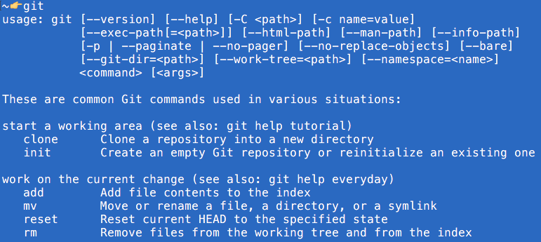
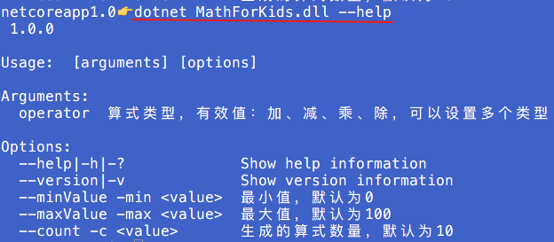
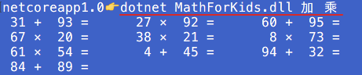
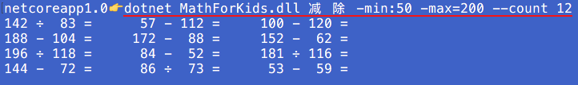

使用 CommandLineApplication 类创建专业的控制台程序
在 .NET Core 里使用 CommandLineApplication 创建专业的控制台程序
闲话
在很久很久以前，电脑是命令行/终端/控制台的天下，那屏幕上的光标在行云流水般的键盘敲击下欢快地飞跃着，那一行行的字符输出唰唰唰地滚动着……直到 Windows 95 的出现（那时候我还不知道苹果电脑和它的操作系统），我的鼠标终于不再召灰，开始有了用武之地，然后就是 GUI 的天下……
然而世事就是这样，锦绣繁华之后就开始返璞归真，大鱼大肉太多就向往点粗茶淡饭，开车开久了就怀念起自行车，GUI 充斥的 Windows 的世界里似乎也开始挂起一阵控制台的清风。毕竟，一旦你熟悉了各种命令和参数，敲键盘的速度还是胜过鼠标的，只是现在的人都太懒或者太忙，总是宁愿牺牲效率而不愿意去多记一点东西。
我个人还是很喜欢命令行的，尤其是远程访问一个系统的时候，一个简单的 ssh 命令直接登录到远程 Linux,一个简单的 scp 命令就可以互相传输文件，这种便利、快捷是 Windows 远程桌面所无法比拟的。GUI 也许是 Windows 的设计哲学， 做什么事情都要靠 GUI。 没错，这大大降低了各种操作门槛，但是作为一个程序员，GUI 工具并非总是最佳选择，但除了 GUI 工具，替代选择并不多——直到 .NET Core 的出现。
专业的控制台程序
首先我们要有个标准，怎样才算“专业的控制台程序”？
平常无论是写着玩还是工作需要，我都做过一些控制台程序，在启动参数的传入、解析和执行上都比较随意，类似 MyProgram abc 123 这样，MyProgram 是程序名，abc、123 是参数值，内部直接用 args[0]、args[1]取得参数值并使用。仅此而已。时间长了，自己都搞不懂每个参数什么意思，参数有哪些有效值，都得查源代码才知道，每个参数的顺序也很重要，颠倒不得。而内部实现上，至少是 Main 方法里是典型的面条式代码。由此可见，我的这些控制台程序，无论是外在，还是内在，都业余得很。
那一个专业的控制台程序应该是什么样的呢？
完善的帮助信息
当你面对一个陌生的命令行程序，或者重新面对你自己2个月之前写的命令行程序，你心里第一反应会是什么呢？让我猜猜，你的第一反应一定是“这货到底怎么用？”（不要告诉我我猜错了，我不相信💢），下一个想法就是这个程序能告诉我用法就好了。一个专业的控制台程序必然会满足你的这个需要——它可以提供完善的帮助信息。比如 git:

有了这些帮助信息，我们自然信心倍增，心里有谱多了。
我希望我写的控制台程序也能做到这点！
符合“国际惯例”的调用方式
如果你留意一下 Linux 平台下的一众控制台程序，你会发现他们的参数组织和调用方式十分类似，这种约定俗成的“国际惯例”十分有助于降低熟悉各个控制台程序的学习成本。
我们还是以 git 为例，从上面的截图可以看出，它有非常多的参数可用。虽然都是参数，但根据作用不同，可以分为 command, argument, option 三类。我不是控制台程序达人，对这3类参数的区别与联系还在深入理解、学习中。目前的理解是（以 git 为例）：
command
一个复杂的控制台程序可以提供多个子命令，而 command 就代表这些子命令
比如
clone，initargument
是一个 command 需要的参数。
比如执行
clone的时候需要指定一个 repository 的地址，这个地址就是一个argument。option
调整 command 的行为。
比如对于
clone可以增加--verbose参数使其输出更详尽的信息。通常以两个短横线开头后跟参数名，比如
--verbose，对于常用的 option 还会有简写形式，就是一个短横线后跟简写形式的参数名，比如--verbose支持简写形式-v，在帮助里通常以--verbose, -v或者--verbose|-v的形式说明。option 可以有值也可以没有值，有值的时候，其赋值方式不一而足，常见的有用空格的
--branch dev，用等号的（注意等号两边没有空格）--branch=dev，用冒号的（冒号两边没有空格）--branch:dev
对于相对简单的控制台程序，可能只有 argument 和 option 而并不包括 command。
看看那些有名的控制台程序，基本上也都遵循这个套路。在这方面，我不想做个怪胎，所以，我希望我写的控制台程序也能遵照这些“国际惯例”！
易于维护的内部实现
在控制台程序的内部实现上，以前的做法非常简单粗暴，用一堆 if 或者 switch 配合各种 && 和 || 成功地做到了一开始只有“上帝”和我明白，1个月后只有“上帝”明白的效果。随着程序参数增多、逻辑越来越复杂，这么搞下去，“上帝”依然可以很潇洒，我会被搞死的。为了不让我变成秃头，为了我可以有更多的时间玩游戏，控制台程序的内部实现必须井井有条、易于维护！
问题来了
了解了一个专业的控制台程序应具备的素质，那么接下来有一个问题萦绕在我心头久久不肯散去……
作为一个小白，要实现一个有详细说明信息、调用方式符合“国际惯例”、还能优雅地处理各种参数的控制台程序何其困难？而如此套路化的东西难道没有一套成型的东西供参考吗？
CommandLineApplication
天无绝人之路，一次偶然的邂逅，遇到了它—— CommandLineApplication。如果你用 .NET Core 的话，它可以在你构建专业控制台程序的路上助你一臂之力。
它全名是 Microsoft.Extensions.CommandLineUtils.CommandLineApplication，家住 GitHub 省 aspnet 市 Common 区 src 路 Microsoft.Extensions.CommandLineUtils 大院 CommandLine 室.如果你路盲，这里有个传送门。
实践是检验真理的唯一标准 - MathForKids 程序
让我们从头开始，利用 dotnet cli 和 Visual Studio Code 亲自体验一下它到底有多强大。我们将创建一个 MathForKids 程序，它可以根据参数输出一些加减乘除的算式，让孩子算算结果。
MathForKids 程序的功能
它只输出算式，所以我们不要搞得太复杂，不需要什么子命令 command。
想了解带 command 的用法，可以参考本文最后附上的 CommandLineApplication 的官方测试代码 😛
它在执行的时候需要指定输出的算式是加、减、乘、除还是这4种运算符的组合，因此我们可以设置一个 argument:
operator.这个 argument 可以允许同时设置多个值。
它可以设置生成的数字的最大值和最小值，因为它们只是调整输出的算式种数字的大小，因此我将其归为 options:
minValue,maxValueminValue的默认值是0maxValue的默认值是100它可以设置生成的算式个数，这也只是调整输出结果，因此我也将其归为 option:
countcount的默认值是 10
MathForKids 程序的用法
在我们看代码之前，先看看这个程序用起来应该是什么样的。
注意：在本文发布之时，.NET Core 处于 RC 2 阶段，还不支持编译为本地可执行文件。所以目前必须使用 dotnet MathForKids.dll 来运行。图中红色下划线表示输入的命令
首先，它可以提供帮助信息：

从帮助信息中我们可以看到它支持的所有参数，并且支持参数的全写和简写，比如我们可以写 --minValue 也可以简写为 -min。
当我们调用它只生成加法和乘法，其它选项默认时：

注意，我们一次传入了多个参数： 加 乘。
当我们设置一些 option 来改变输出结果时：

注意，这里演示了使用全写和简写添加 option 以及以多种方式赋值（使用冒号、等号和空格）。
以上使用方法看起来是不是有点“专业”的味道了？
Show me the code
为了使用 CommandLineApplication 类，我们需要添加对 Microsoft.Extensions.CommandLineUtils 的引用：
1 | { |
这是 MathForKids 程序的主体部分，说明都在注释里：
1 | using System; |
CommandArgument 和 CommandOption 的使用非常简单，有 HasValue 和 Value 等方法可以判断和取值。
所有代码放在我的 GitHub 里。
官方的测试类也是一个很好的参考资源。